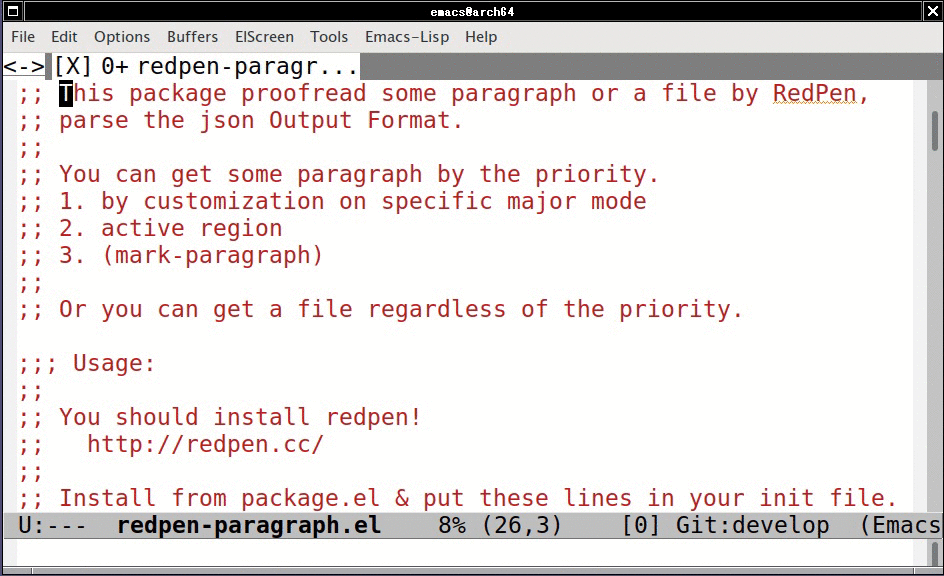

redpen-paragraph.el の紹介
Table of Contents
1 redpen-paragraph.el の紹介
マニュアルを書く機会があったので redpen-paragrah.el と いう Emacs Lisp パッケージを作ってみた．
karronoli/redpen-paragraph.el: RedPen interface for proofreading paragraph.
これによって Emacs から RedPen をいい感じに使うことができる． この elisp は作ってから1年位使っていて， せっかくなので今回の記事を起こした．
2 RedPen の紹介
http://redpen.cc/ より引用．
RedPen はプログラマや記者が規約にしたがって文書 (マニュアルやソフトウェアドキュメント) を記述するのをサポートします。 RedPen は自然言語で記述された入力文書のチェックを自動化します。
RedPen には入力文書のフォーマットがいくつかあって， Markdown や AsciiDoc， LaTex 等サポートされてる． Pull Request や Issue もいい感じに対応してくれる． GitHub ArchLinux ユーザは AUR (en) - redpen を使っておくと systemd から使えるので良かったらどうぞ．
3 クイックスタートガイド
どこかのキーに redpen-paragraph を割り当てて任意の文章上で起動． C-u 付きで起動すればファイル単位を校正できる．
(define-key global-map (kbd "C-c C-r") 'redpen-paragraph)

4 redpen-paragraph.el をなぜ作ったか？
Emacs で org-mode に対して校正したかったから． それと RedPen は org-mode に対応していなかったから． org-mode のフォーマットは 基本的には 複雑なものじゃない． org-mode の 正規表現をコピペすればそこそこ実用的なものは作れると思う． だけど細かい変更に追従できる気がしない．
それならファイルの部分ごと，文章単位で校正できれば org-mode 以外にも 使えるんじゃないだろうか？ （例： ソースコードのコメント）
以上の理由から redpen-paragraph.el を作った．
5 なにができる？
5.1 文章単位での校正
M-x redpen-paragraph でカーソル上にある文章を redpen-server に投げて， 返ってきた結果を compilation-mode で表示する． エラーがあれば，その項目を選んで文書中の該当箇所に飛べる． ただし毎回 M-x から呼ぶのは億劫なので，任意のキーに割り当てて 使うことを想定している．
5.1.1 org-mode での校正
文章中の非表示文字を無視して，表示文字に対して校正する． redpen-paragraph-alist をカスタマイズすることでメジャーモードごとに 挙動を変更できる．
5.2 ファイル単位での校正
キー割り当てをして C-u を付けて呼ぶと一時的にファイル単位で校正する． 常にファイル単位で校正したい場合は .emacs.el に以下の記述をする．
(defvar redpen-paragraph-force-reading-whole t)
常にファイル単位で校正したい場合は flycheck も検討するといいと思う．
5.3 入力言語の判定
RedPen は英語と日本語に対応している． 入力文章が ASCII 範囲内の文字とそれ以外の範囲の文字が混ざってる場合， それぞれの文字数の比に応じて RedPen の使用言語を切り替える．
6 注意点
6.1 デモ用途 redpen-server
elisp のインストール直後で利用できる redpen-server は 自分が Heroku にデモ用途として設置している． セキュリティや応答性，サービスの継続性を気にする場合は 各自でサーバを立てること．
6.2 Emacs の日本語カウント
Emacs は日本語の1文字を2文字分として解釈する．なので エラー場所を表示するときに，日本語のある場所への正確な位置は できない．この挙動を変える設定はどこにあるんだろう…
7 今後の予定
RedPen には欲しい機能や「？」な挙動が 幾らかあるので JavaScript や Issue で 今後も突っついていきたいと思う． redpen-paragraph.el は json2 フォーマットを使うように変更する．